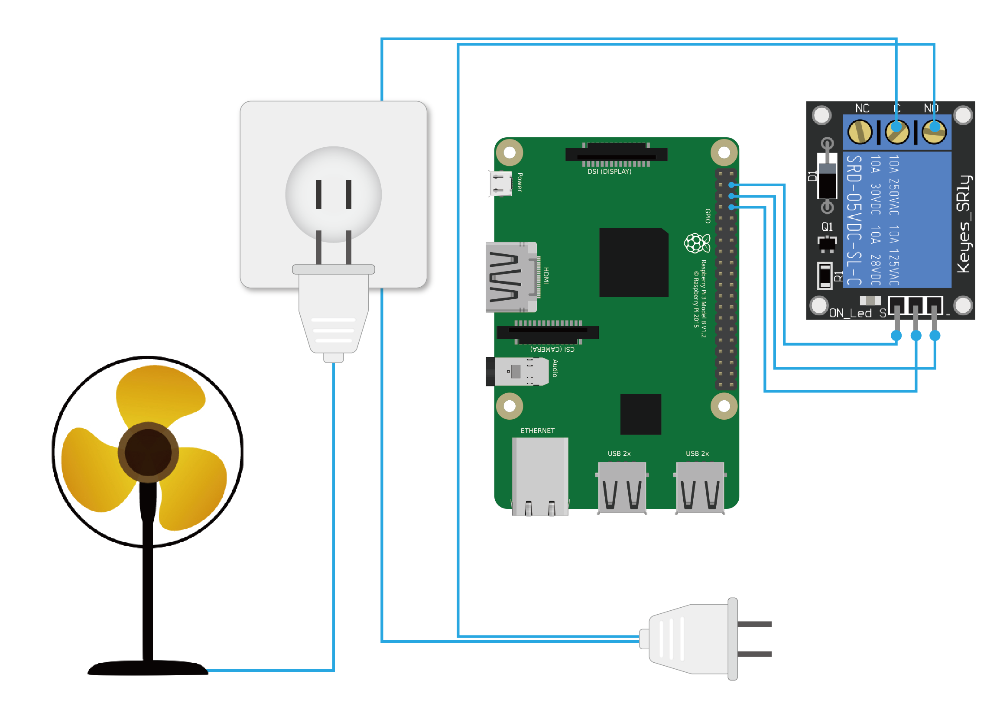
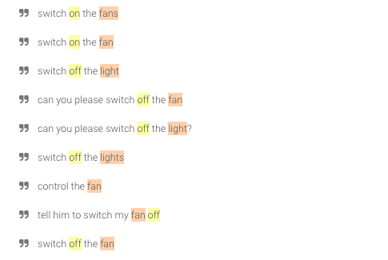
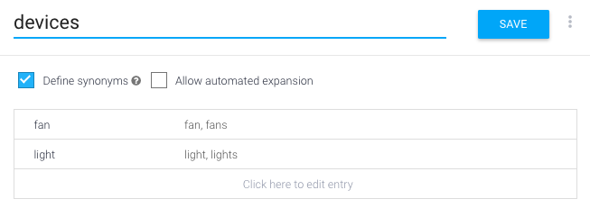

前一篇有教在Dialogflow打造專屬Google Assistant App ，這次要來個小小的延伸，利用 Google Assistant 控制 Relay 來達到智慧插座的目的。
原理圖
首先我們先來看一下智慧插座的原理圖，簡單來說可以分為兩個部分，控制系統(輸入)和被控制系統(輸出)，將原本兩條直通插座的其中一條，改為連接到 Relay 模組，再利用樹莓派控制GPIO，即可完成智慧插座，簡單吧！

材料
需要的材料有
- 繼電器模組
- 插座
- 單心線
- 快速接頭
- 杜邦接線三條(母-母)
- 樹莓派
繼電器
繼電器是自動控制電路常見元件，透過小電流控制大電流，達到控制開關的目的。小電流用電訊號進行控制(左)，利用電磁原理讓金屬簧片切換，進而讓電器開路或斷路(右)。
繼電器規格有很多種，得依造上面的標記去做判斷，例如我的 5vDC、125vAC 15A。5v就是驅動電壓，通常都是用晶片控制所以會是直流(DC)，而晶片輸出的電流有可能電流不足，無法驅動繼電器，所以在驅動繼電器之前會有電晶體做放大。125vAC 15A 指的是在市電 110v下最高電流為 15A，另外輸出端有三個接點，分別為共接點(COM)、常開(NO)、常閉(NC)，必須依造自己需求選擇要接 NO 或 NC ，例如我們要在驅動繼電器後才開始動作，所以必須接常開。
控制GPIO
選定樹莓派一隻腳位做輸出，例如我選 GPIO18，加上上一篇的程式碼，如下，apiKey、authDomain、databaseURL 填入自己Firebase資訊。1
2
3
4
5
6
7
8
9
10
11
12
13
14
15
16
17
18
19
20
21
22
23
24
25
26
27
28
29
30
31
32
33
34
35
36
37
38
39
40
41
42
43
44
45
46
47
48
49
50
51
52
53var firebase = require("firebase");
var config = {
apiKey: "",
authDomain: "",
databaseURL: "",
};
firebase.initializeApp(config);
var db = firebase.database();
var ref = db.ref("/auto");
ref.on("value", function(snapshot) {
var Light_value = snapshot.val().light.value;
var FAN_value = snapshot.val().fan.value;
blinkLED(Light_value);
SwitchFan(FAN_value);
});
var gpio = require("onoff").Gpio;
const LEDR = new gpio(13, 'out');
const LEDG = new gpio(5, 'out');
const LEDB = new gpio(6,'out');
const FAN = new gpio(18,'out');
LEDR.writeSync(1);
LEDG.writeSync(1);
LEDB.writeSync(1);
FAN.writeSync(1);
function blinkLED(State) {
if (State === 'on') {
LEDR.writeSync(0);
LEDG.writeSync(0);
LEDB.writeSync(0);
}else{
LEDR.writeSync(1);
LEDG.writeSync(1);
LEDB.writeSync(1);
}
}
function SwitchFan(State) {
if (State === 'on') {
FAN.writeSync(0);
}else{
FAN.writeSync(1);
}
}
Dialogflow
登入Dialogflow ， 開啟之前的專案，在 Intents 新增智慧插座的關鍵字，例如 Switch off the fan， Entities 新增裝置名稱，例如 Fan …等。


測試
在樹莓派上執行 javascript 檔案，並在 Dialogflow 右側輸入關鍵字 Switch off the fan ，如果看到 Firebase 多了一個 Fan 的結構，恭喜你完成囉！